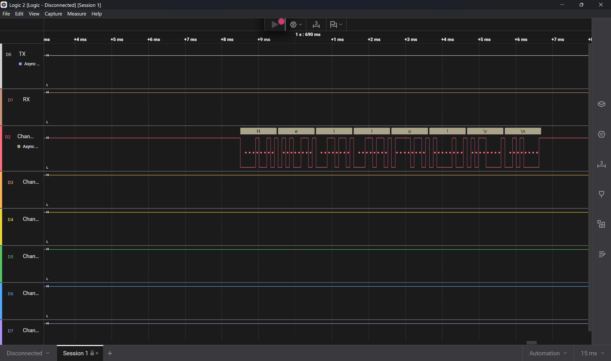

Weekly Internship Report
National Institute Of Speech and Hearing (NISH)
Week 1: Orientation & Clinical Observations
We commenced our six-week internship with an orientation to NISH, and attended an insightful session on prioritizing user needs through the Bio-Design process. In contrast to the conventional design process, Bio-Design process focusses observing a patient to identify their needs, record the observations and formulate the corresponding problem statement in the format: A way to [improve outcome] for [stakeholder] in [context].
We completed an extensive campus tour exploring assistive technologies in the library, inclusive infrastructure layouts, and the early intervention classrooms. We were given a brief introduction on the objectives of NISH, its functioning and facilities, various sections and the respective operations carried out in each section.
On the second day, we were divided into two groups to observe the functioning of different clinical departments.
We were introduced to alternative communication frameworks and interacted with high-tech AAC applications like Avaaz used in therapy sessions. We learned that not every child is suited for the same communication method, and AAC solutions are selected based on the child’s abilities and requirements.
We silently observed tailored therapy sessions and patient-therapist dynamics within the Physiotherapy and Occupational Therapy clinics. The clinics primarily catered to children under the age of five with a variety of developmental and physical conditions. We observed that children responded differently to therapy sessions - while some actively engaged and enjoyed the exercises, others were less comfortable and required additional encouragement and support.
We finalized our project topic as "EMG-Controlled Robotic Hand Assist Device" and mapped out clinical validation goals. We later met with Joseph Sir to discuss the proposed concept and receive clinical input, as he enlightened us with various aspects of the topic, underlying terms, and the recent developments made.
Week 2: Microcontroller & Sensor Familiarization
We studied the user guides and hardware layouts to get familiarised with the underlying architecture of TI MSP430-EXPFR4133 microcontroller.
We examined the pin layout of the board to understand how different pins are assigned for digital input/output operations and peripheral interfacing. The microcontroller uses a port-based arrangement for organizing pins, making it easier to configure and manage multiple devices.
We also explored the communication protocols supported by the board, including UART, I2C, and SPI, which are widely used for communication with sensors and external modules.
We dedicated time to configuring Texas Instruments' Code Composer Studio IDE, familiarising with project setups and compilation workflows.
To gain practical exposure, we explored the out-of-box demonstration software provided with the development board. We tested demonstration applications such as stopwatch and timer programs, where user inputs were provided through the onboard buttons and outputs were displayed on the LCD screen. We also tested a temperature module to display the room temperature in both degree celsius and fahrenheit.
We also demonstrated simple experiments with the board such as blinking the LEDs on the board, and controlling operation with the switches provided.
We began with simple exercises involving the onboard push buttons, where programs were written to detect button presses and display corresponding counts on the segmented LCD. These introductory activities helped us understand GPIO configuration, input handling, and display control.
Error: LCD Identifiers "undefined": Some LCD identifiers showed "undefined" error in init_LCD().
Resolution: Included header file driver.h in main.c.
Error: Incorrect Number Display: Inconsistent display was recorded on the LCD module instead of receiving a proper format for digits.
Resolution: Referred to hal.c code in Out of Box Experience to learn and implement a proper format to display digits on the LCD module.
We configured GPIO registers and practiced reading basic analog inputs by converting data values from a potentiometer onto the in-built LCD module.
Error: Display stuck at "10XX" instead of showing actual readings: 5th and 6th position readings on the LCD fluctuated, while the 2nd and 3rd position readings stood permanently stuck at "10".
Resolution: Potentiometer wire was connected to the pin P1.3, but in initADC() it was configured to P1.1 as input, which caused the error. Hence, enabled the analog function to select bits on P1.3 (P1SEL0) and routed the ADC internal multiplexer to Sample Channel A3 (ADCINCH_3).
We connected ultrasonic sensors to process real-time environmental data input and attempted SD card storage routines.
Error: Display stuck at "0999": LCD showed 0999 instead of actual readings. Trigger connected to P1.4 and Echo connected to P1.5.
Resolution: This was a software timeout indicating MSP430 triggered the sensor but never received the Echo pulse back. Instead of Timer Capture mode, used standard GPIO Port 1 Edge-Triggered Interrupts (PORT1_VECTOR).
We tried to display the number of times Switch S1 is pressed on LCD, and store the value in the SD Card. It was noted that the count was successfully displayed on the LCD, but we were unable to enter that data to a LOG.txt file in the SD Card, which was blank after the operation. We imported FatFs and Petit FatFs file headers to perform the operation, but that did not resolve the issue. Later on, we found out that data was stored on raw sectors in the SD Card, which could be viewed with a Hex Editor.
We mapped out optimal forearm sensor placement configurations utilizing the Myoware 2.0 LED shield to evaluate surface electromyography muscle signals. We initially faced difficulty in locating optimal points to record required output, but later on were able to find apt locations to place the electrodes on the skin.
Week 3: Debugging Peripherals & School Readiness Camp
A major focus of this week was successfully interfacing various peripherals with the MSP430 microcontroller and resolving the issues encountered during earlier attempts. We leveraged logic analyzers to resolve serial timing failures and established stable communication channels via clock configuration updates.
We first tried to display a simple message "Hello!" to the Serial Console on Code Composer Studio. The connection was established. However, instead of displaying the exact message, we could see that gibberish values were recorded on the console.

We used Saleae Logic Analyser to decode the core issue. We could also match the baud rate and ensure proper communication channels and ports were set to display the message. Also, we noticed a slight mismatch in practical and ideal values in clock signals. Hence, we calibrated clock values to support proper communication.
We successfully integrated precision stepper motor controls using physical button switches and built a Python script to convert logged binary files in the SD Card to readable file format.
We set up the WaveShare touch dashboard platform using the LVGL library to simulate system calibration and parameters. This was a simulated attempt to demonstrate how the display would actually show the EMG signals and carry out its visualisation.
We prepared tailored evaluation kits filled with articles like pencils, clay, stickers, flashcards, crayons and building blocks to prepare for the school readiness assessment camp being held at NISH.
We supported the CATI department during the camp by observing behaviors of participants, helping with the transportation of materials and registration of the participants, and assisting parents evaluating developmental milestones for children with ASRD as a part of the camp.
The camp provided valuable exposure to the practical aspects of working with children with developmental differences and supporting their families. It helped us develop a better understanding of the diverse needs, behaviours, and learning styles of children with ASRD, while also fostering empathy and patience.
Week 4: Inter-Board Interfacing & Software Development
We faced a hardware UART port failure on the WaveShare display module. We had to ensure that it works on the USB port, and hence we switched to methods adapting workflows to run through alternative USB protocols.
Error: UART port connection shows "Windows:Device Not Recognised" error. We need to verify if the board works on the USB port.
Resolution: The below code was implemented to check the response on Arduino IDE Serial Monitor:
/* Waveshare ESP32-S3-LCD-4.3 Basic Functionality Test
Verifies: Code flashing, USB Serial communication, and CPU runtime. */
#define LED_BUILTIN 2 // Note: Some revisions may require the IO expander for LEDs,
// but we focus on USB/Serial connectivity here.
unsigned long previousMillis = 0;
const long interval = 1000; // 1 second intervals
int testCounter = 0;
void setup() {
// Initialize Serial communication at 115200 baud
Serial.begin(115200);
// Delay to allow Serial Monitor to open and capture initial logs
delay(2000);
Serial.println("\n--- Waveshare ESP32-S3-LCD-4.3 Test Program ---");
Serial.print("Chip Revision: ");
Serial.println(ESP.getChipRevision());
Serial.print("Flash Size: ");
Serial.print(ESP.getFlashChipSize() / (1024 * 1024));
Serial.println(" MB");
Serial.print("PSRAM Size: ");
Serial.print(ESP.getPsramSize() / (1024 * 1024));
Serial.println(" MB");
Serial.println("------------------------------------------------");
Serial.println("Type anything into the input bar above to test Loopback!");
}
void loop() {
unsigned long currentMillis = millis();
// Print a heartbeat message every second to ensure the chip isn't crashing
if (currentMillis - previousMillis >= interval) {
previousMillis = currentMillis;
testCounter++;
Serial.print("[Heartbeat] Board is alive! Running seconds: ");
Serial.println(testCounter);
}
// Check if data is received via the USB/UART port and echo it back
if (Serial.available() > 0) {
String receivedData = Serial.readStringUntil('\n');
Serial.print("-> Echo From Board: ");
Serial.println(receivedData);
}
}
The code was loaded successfully and the message sent by user echoes back to the Serial Monitor:
[Heartbeat] Board is alive! Running seconds:89 [Heartbeat] Board is alive! Running seconds:90 [Heartbeat] Board is alive! Running seconds:91 [Heartbeat] Board is alive! Running seconds:92 -> Echo From Board: NISH [Heartbeat] Board is alive! Running seconds:93
We successfully configured a stable master-slave data transfer between the ESP32 and MSP430 platforms utilizing direct I2C bus arrangements.
We audited our micro-controller register configuration and evaluated sEMG signal conversion pipelines to optimize analog reading consistency. Readings received from the Myoware sensor ranged from 0mV to 7.45mV.
We reviewed MSP430 port selection registers to understand why certain online examples using both PxSEL0 and PxSEL1 were incompatible with our microcontroller. This was because MSP430FR4133 only provides PxSEL0, allowing two selectable functions per pin, whereas other MSP430 variants use both registers to support additional peripheral functions.
We upgraded our storage script to allow continuous multi-sector data streaming, securing capacity for up to 400,000 continuous readings without memory losses. Testing was carried out using a 10 MB text file, and the system was configured to align logged data correctly within the storage space.
We conceptualized assistive simulation parameters and developed an engaging 2D interactive Pygame prototype designed around muscle contraction tracking thresholds.


For the initial phase, we developed a game prototype with keyboard input. The game synopsis is to collect 10 mangoes from an orchard, where the player will perform a jump whenever "up arrow" is pressed, and on completion it will display a victory message.
Later on, the "W" key was added to perform a low jump, and the "up arrow" remained to perform a high jump considering the varying levels of flex in muscles. The keyboard input will be later replaced by EMG signal values to perform the player jump action.